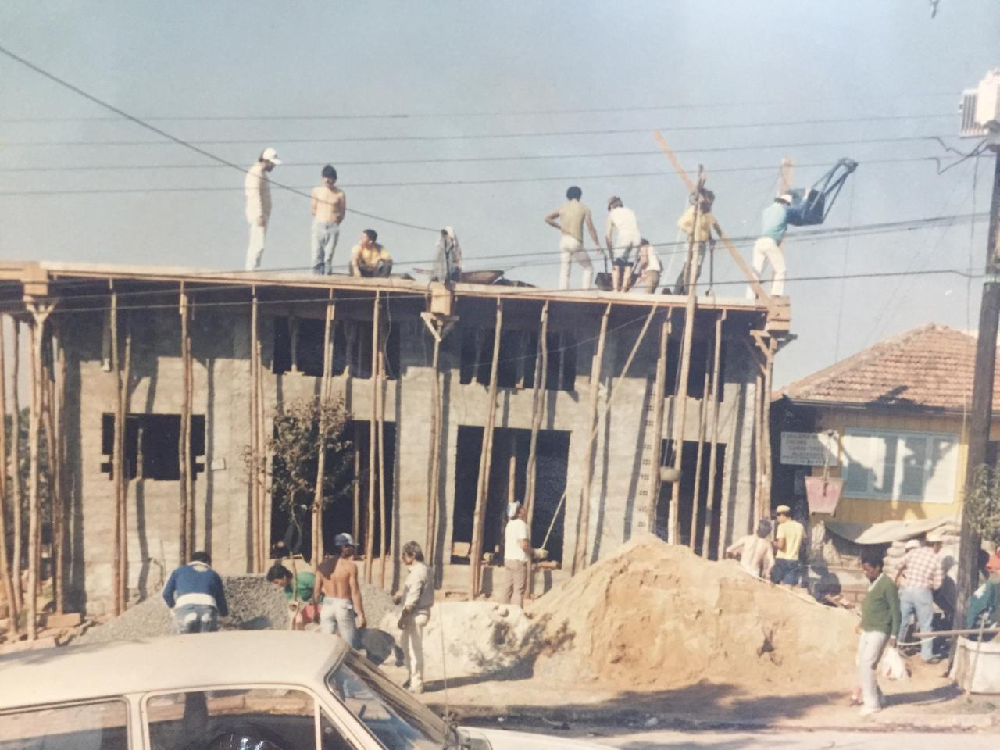
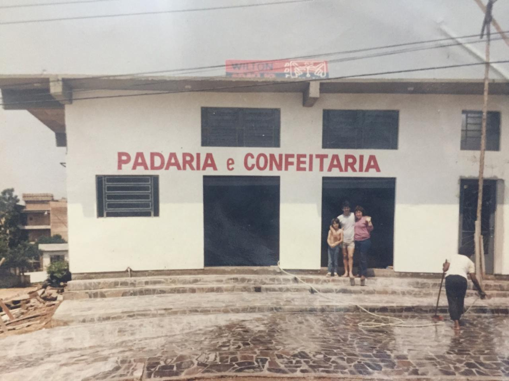
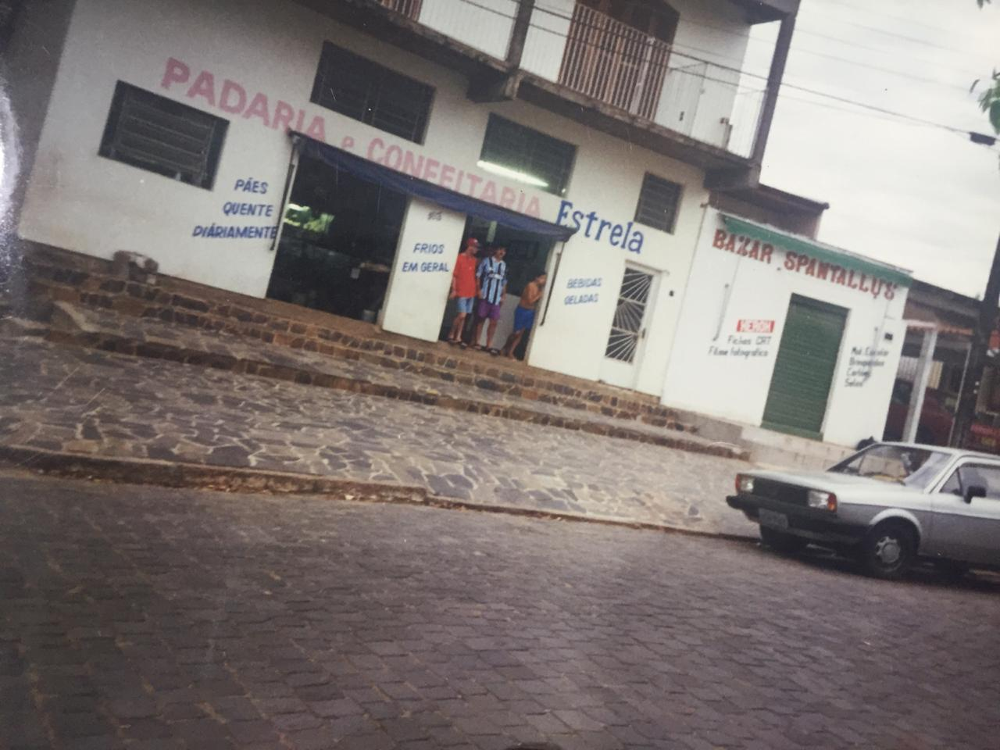
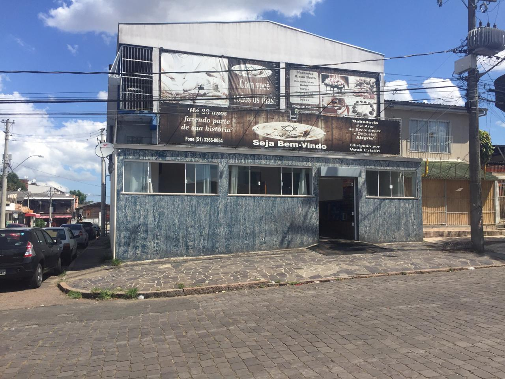

Home
Contato
Nossa Historia
Nossa Historia

A nossa história começa com a visão do jovem casal em 1983. Que juntos, no porão da igreja Santa Rosa de Lima, montaram a Padaria Estrela do Norte. Após algumas adversidades, em 1985, mudaram o ponto de lugar, para um ponto próximo do nosso endereço atual. E além da padaria, montaram o reparte de pão cru para os mercados do bairro. Em 1988, com alguns altos e baixos e varias mudanças , passamos para o endereço de onde estamos hoje, que nos faz ser conhecidos pelo famoso codinome “Padaria da Esquina do Postinho de Saúde da Santa Rosa”. Na avenida Donário Braga, 163. Vila Santa Rosa de Lima. Ao decorrer do tempo, mesmo com as atualidades, tecnologia avançando, as mudanças dentro da equipe e novamente altos e baixos da empresa. Conseguimos construir nossa padaria, nossa casa, nossa produção e principalmente nosso nome.


Em 2007, montamos nosso reparte de pão congelado, o que estendeu nossas vendas para uma distância e praticidade maior. Recentemente o nosso plano de anos de montar o café, foi tirado do papel em 2016. Hoje, em 2020, a padaria segue na mesma família. Visando os mesmos iniciais valores de prestar bons produtos e zelar pela amizade com nossos clientes. São 37 anos fazendo história. 37 anos fazendo parte da sua história e você da nossa! Agradecemos a todos que fizeram e fazem parte dessa jornada com a nossa família! Gratos por todo o carinho, reconhecimento e confiança que a nós depositam todos esses anos!
